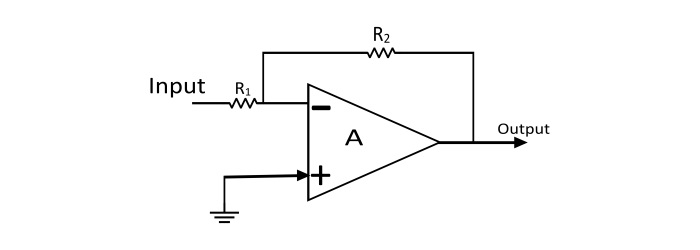
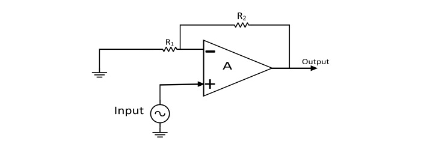

Procedure
- Refer to the following diagrams to make connections in the simulation for Inverting Amplifier.

- Refer to the following diagrams to make connections in the simulation for Non-inverting Amplifier.

- After connections are made, click on 'check' to check them.
- If unable to make correct connections, click on 'connect automatically'
- Set various values of input voltage, input frequency,R1 and R2, and click on 'calculate' to plot graph
- Do the same for all three configurations provided in the dropdown box.
« Previous
Next »